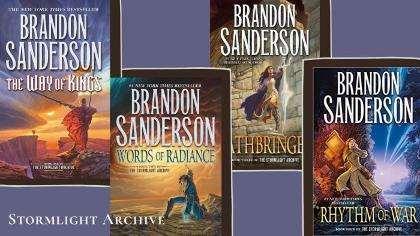
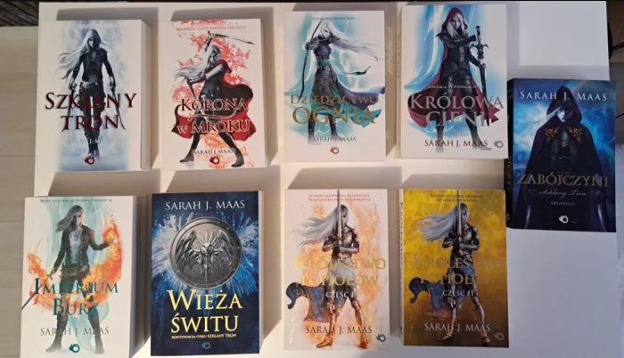

WIEDŹMIN
Pozycja, której żadnemu fanowi fantastyki nie trzeba przedstawiać. Absolutny majstersztyk, który wyszedł spod pióra Andrzeja Sapkowskiego. Miałem przyjemność czytać przed wyjściem serialu (hic), a w czasie ogrywania pierwszej części gry CD Projekt Red, przez co zaspoilerowałem sobie samą końcówkę.
ARCHIWUM BURZOWEGO ŚWIATŁA
Jedno z uniwersum napisane przez Brandona Sandersona. Pozycja obowiązkowa dla każdego fantasy. Świetnie napisanych kilka bohaterów głównych, których losy w końcu się splatają ze sobą. Bardzo powoli budowane napięcie, które rozgzewa czytelnika w momencie kulminacyjnym.
Z MGŁY ZRODZONY
Kolejna seria Brandona Sandersona, trochę mniejszych gabarytów od wspomnianego wyżej archiwum burzowego światła. Tym razem seria jest podzielona na dwie ery - pierwsza dziejąca się w latach "średniowiecza" ze względu na obecność broni białej oraz druga, w której występuje broń palna. Na początku nie byłem przekonany, ponieważ w mojej głowie zawsze para broń biała = fantastyka, jednak w przypadku Zrodzonego z Mgły nie przeszkadza to w odbiorze lektury. Polecam bardzo na początek swojej przygody z twórczością Brandona Sandersona.
SZKLANY TRON
Seria Szklany Tron została napisana przez Sarah J Maas i zawiera wszystko, co dobra fantastyka powinna zawierać. Mamy wspaniałych wojowników i wojowniczki, magię oraz potężnych wrogów. W całej serii więcej jest również romantycznych relacji niż w wyżej wymienionych dziełach, lecz są one zgrabne i nie przeszkadzają w odbiorze lektury. Z ręką na sercu polecam fanom fantastyki.
